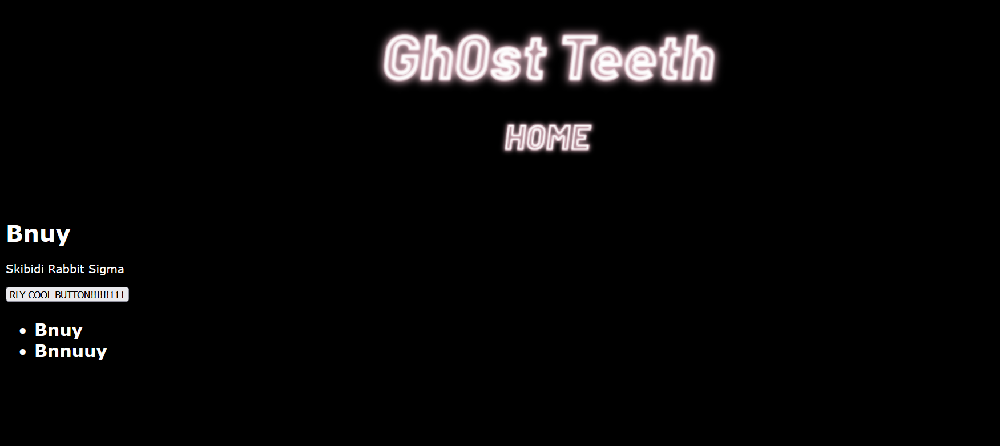
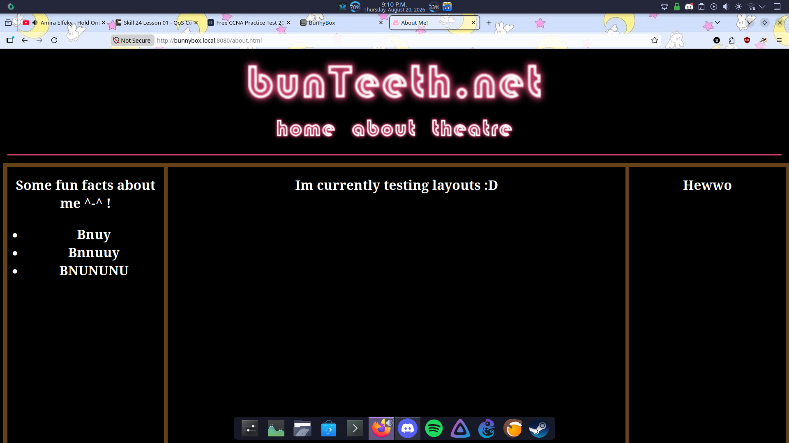
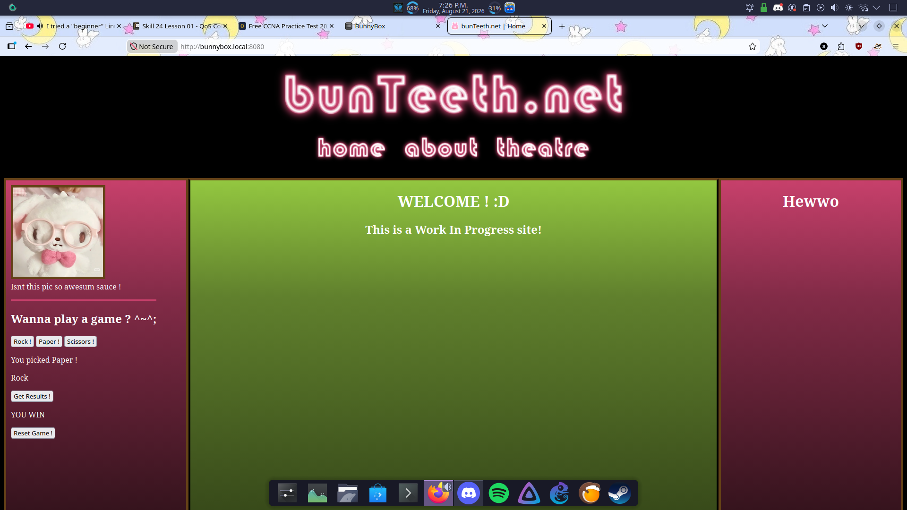
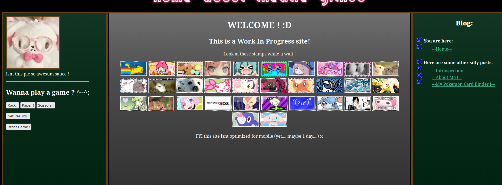
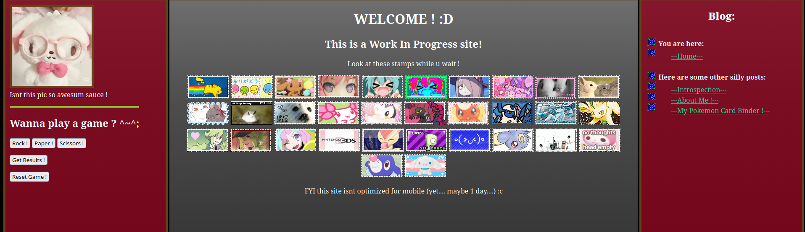
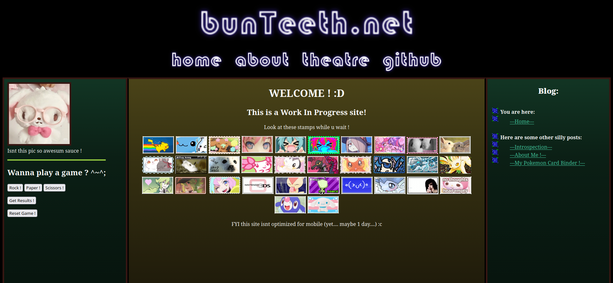

Making a Website is Hard... But Super Rewarding !
(It's given me so many migraines though...)
Hi! In this post I'm gonna go over how I began my website making journey. I might even make a series of tutorials going over each major step I took to get my website from a crummy single static page on Neocities to this pretty nice dynamic site running Flask and PostreSQL.

This is what my site looked like from summer 2025 to about august 2026
I was excited at first to start making a site on Neocities because it seemed so cool in concept and I had lots of ideas (or so I thought) of what I could make, but I quickly realized just how daunting of a task it is to learn HTML, CSS, and JavaScript, as well as color theory, composition and coming up with ideas of features to add to the site.
For basically an entire year my hopes & dreams of making a website laid dormant until I was researching alternatives to tailscale for remotely connecting to my homelab. I decided to go with Cloudflare tunnels and while I was at it i decided to browse their list of available domain names for fun and tried searching for my current username, bunTeeth, and came across bunTeeth.net and noticed it was fairly cheap at only $12 CAD per year, so I swiftly bought it. Spending money on that domain ended up being a pretty good motivator for picking back up my goal of making a website!
After quickly brushing up on my admittedly sparse knowledge of web design up until this point I got to work learning even more ways to utilize the main three web design languages from sites like W3Schools, GeeksforGeeks, and of course StackOverflow. After a few days of trial and error I figured out how to use div tags to build the following layout for my site, which I still use to this day.

The layout I thought up (I still haven't figured out what to put on the left sidebar though...)
Once I got the layout set up next it was time to figure out what colors everything should be. As you can see from the images below, I went through a lot of options when coming up with the best looking (to me, at least) color scheme.




Some of the various colorways I tried.
After that the main site settled on the color pallete you see now and a background image I found when browsing for pixel art forest backgrounds that matches it pretty well in my opinion.
After that it was time to start decorating the site with various javascript functions, stamps, and blog posts!
If you made it this far I wanna thank you for reading this silly lil post about how I started this project. I think I'll also start putting together some tutorials to document how I migrated from a static site that services like Neocities and Nekoweb can host, to a self-hosted dynamic site that incorporates Python, Jinja2, and SQL.
P.S. If you wanna replicate my code or just take a look at it to judge how bad I am at programming. You can click that big blue Github button (or, go here)
P.P.S I just made a tutorial for setting up a basic Flask web app, if you'd be interested in checking that out and recounting the process I took to build my site with me, click here!